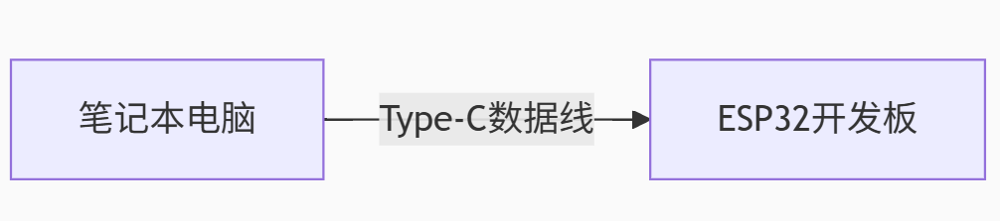
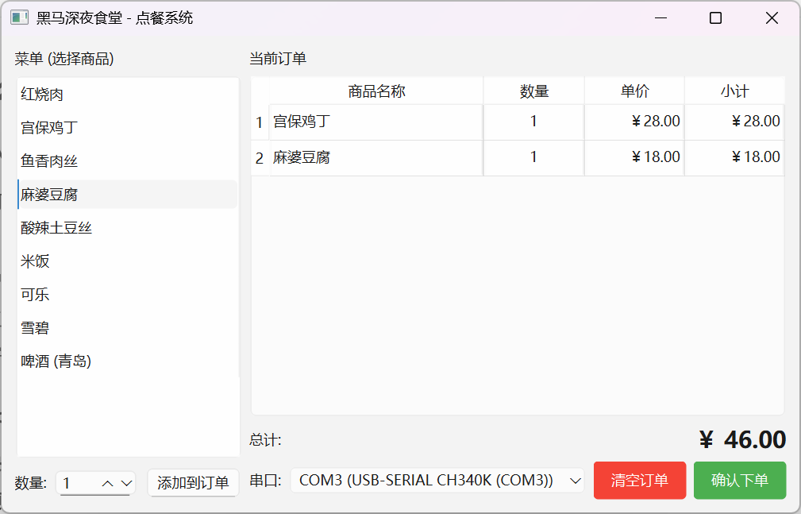
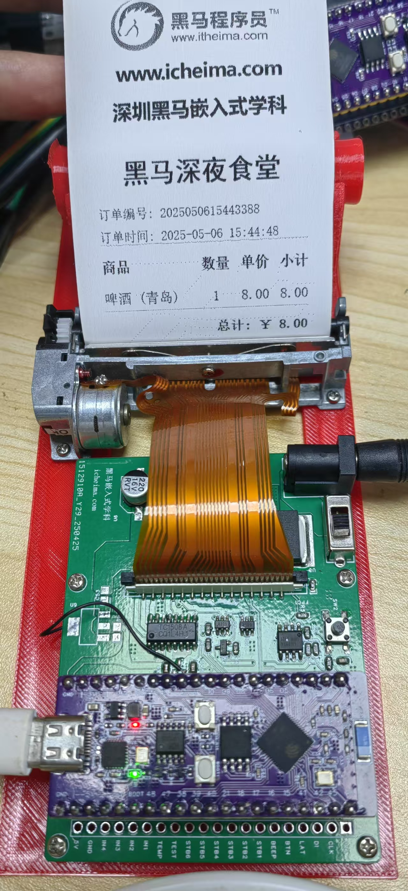
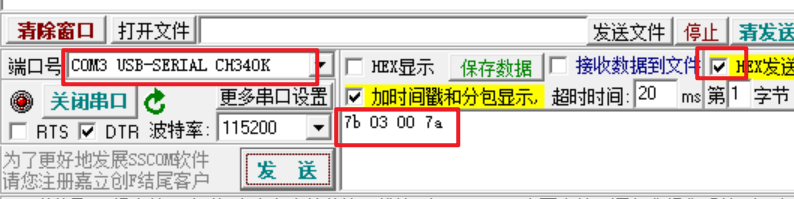
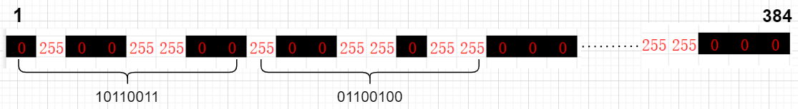
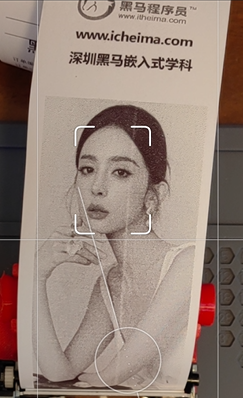
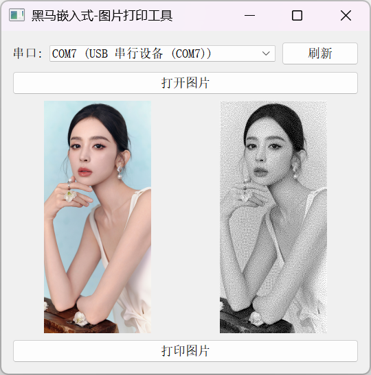
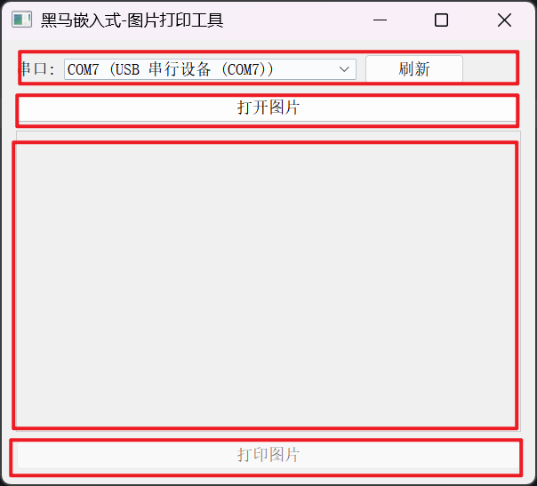
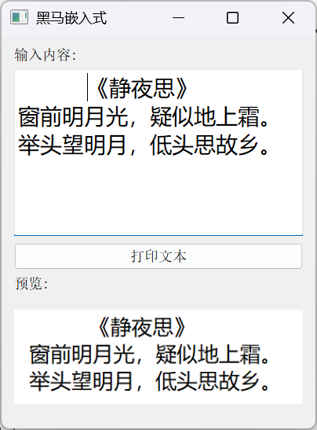
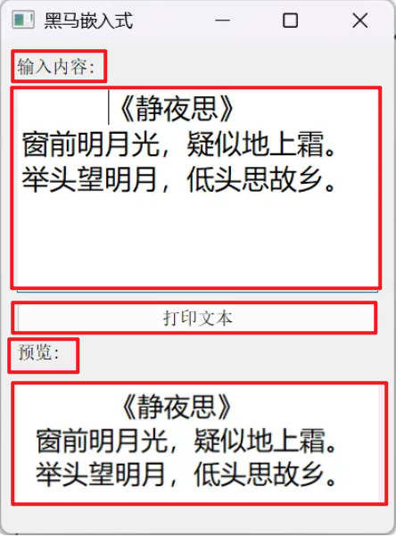

<!DOCTYPE lake>
<p data-lake-id="u493206c3" id="u493206c3" style="text-align: left"><span data-lake-id="u897d0afc" id="u897d0afc">本章我们来学习PYQT上位机和下位机的结合案例，我们将学习使用PYQT构建如图所示的上位机，并用如下图所示打印机，打印出订单小票。</span></p><p data-lake-id="ud0ffbebf" id="ud0ffbebf" style="text-align: left"><span data-lake-id="ue5ce0c4a" id="ue5ce0c4a">​</span><br/></p><p data-lake-id="ubc3450e7" id="ubc3450e7" style="text-align: center"></p><p data-lake-id="u01a34df4" id="u01a34df4" style="text-align: center"></p><p data-lake-id="u41cf6464" id="u41cf6464" style="text-align: left"><span data-lake-id="u2ac898d9" id="u2ac898d9">下面我们先从热敏打印机开始学习吧</span></p><h1 data-lake-id="cZJN6" id="cZJN6"><span data-lake-id="ueaba5748" id="ueaba5748">🔛</span><span data-lake-id="ua34aca8f" id="ua34aca8f">是什么&amp;为什么</span></h1><h3 data-lake-id="Rvknr" id="Rvknr"><span data-lake-id="uca1c5810" id="uca1c5810" style="color: rgb(64, 64, 64)">热敏打印机是什么？</span></h3><p data-lake-id="u2a6b5e3d" id="u2a6b5e3d"><span class="lake-fontsize-12" data-lake-id="u56ec319a" id="u56ec319a" style="color: rgb(64, 64, 64)">热敏打印机是一种通过加热热敏纸（特殊涂层材料）直接生成图像的打印设备。其核心原理是：</span></p><ol list="u3ac09019"><li data-lake-id="u31a719a1" fid="u361210f2" id="u31a719a1"><strong><span class="lake-fontsize-12" data-lake-id="ubd8635e2" id="ubd8635e2" style="color: rgb(64, 64, 64)">热敏打印头</span></strong><span class="lake-fontsize-12" data-lake-id="u2ffb1ec6" id="u2ffb1ec6" style="color: rgb(64, 64, 64)">：由微小的发热元件组成，通电后发热。</span></li><li data-lake-id="u8ab0a1d1" fid="u361210f2" id="u8ab0a1d1"><strong><span class="lake-fontsize-12" data-lake-id="u9c3235e4" id="u9c3235e4" style="color: rgb(64, 64, 64)">热敏纸</span></strong><span class="lake-fontsize-12" data-lake-id="u11d266f1" id="u11d266f1" style="color: rgb(64, 64, 64)">：表面涂有化学涂层，受热后发生化学反应，显色（通常是黑色）。</span></li><li data-lake-id="u3caaed91" fid="u361210f2" id="u3caaed91"><strong><span class="lake-fontsize-12" data-lake-id="uc6384acd" id="uc6384acd" style="color: rgb(64, 64, 64)">无需墨水/碳带</span></strong><span class="lake-fontsize-12" data-lake-id="u0a5010af" id="u0a5010af" style="color: rgb(64, 64, 64)">：直接通过热敏头加热纸面生成内容，因此结构简单、维护成本低。</span></li></ol><p data-lake-id="ubaf99781" id="ubaf99781"><strong><span data-lake-id="u82fa5b0c" id="u82fa5b0c" style="color: rgb(64, 64, 64)">典型应用场景：</span></strong></p><ul list="u458a3481"><li data-lake-id="ua715987d" fid="u917128ab" id="ua715987d"><span class="lake-fontsize-12" data-lake-id="uae396e73" id="uae396e73" style="color: rgb(64, 64, 64)">超市小票、POS机收据</span></li><li data-lake-id="u53f1c355" fid="u917128ab" id="u53f1c355"><span class="lake-fontsize-12" data-lake-id="udbd72919" id="udbd72919" style="color: rgb(64, 64, 64)">物流标签、医疗设备报告</span></li><li data-lake-id="u1ea9a0a6" fid="u917128ab" id="u1ea9a0a6"><span class="lake-fontsize-12" data-lake-id="ud3b2fb5b" id="ud3b2fb5b" style="color: rgb(64, 64, 64)">嵌入式设备（如智能终端、自动售货机）的轻量化输出</span></li></ul><p data-lake-id="u7c18a281" id="u7c18a281"><strong><span data-lake-id="u99887a95" id="u99887a95" style="color: rgb(64, 64, 64)">优缺点：</span></strong></p><ul list="u8cfa8c3f"><li data-lake-id="u0fe7cc33" fid="ue1daa4e4" id="u0fe7cc33"><strong><span class="lake-fontsize-12" data-lake-id="u1b5b775f" id="u1b5b775f" style="color: rgb(64, 64, 64)">优点</span></strong><span class="lake-fontsize-12" data-lake-id="ue1355e2e" id="ue1355e2e" style="color: rgb(64, 64, 64)">：体积小、静音、低成本、免维护（无需换墨）。</span></li><li data-lake-id="u767195c7" fid="ue1daa4e4" id="u767195c7"><strong><span class="lake-fontsize-12" data-lake-id="uc303aaf7" id="uc303aaf7" style="color: rgb(64, 64, 64)">缺点</span></strong><span class="lake-fontsize-12" data-lake-id="ucfc277f6" id="ucfc277f6" style="color: rgb(64, 64, 64)">：打印内容易褪色（长期暴露于光/热环境），仅支持单色。</span></li></ul><hr/><h3 data-lake-id="aRgfl" id="aRgfl"><span data-lake-id="u82b17e6e" id="u82b17e6e" style="color: rgb(64, 64, 64)">为什么要学习？</span></h3><p data-lake-id="ua3c0dbde" id="ua3c0dbde"><strong><span data-lake-id="u41c0d448" id="u41c0d448" style="color: rgb(64, 64, 64)">1. 嵌入式开发的实践意义</span></strong></p><p data-lake-id="u91f2d640" id="u91f2d640"><span class="lake-fontsize-12" data-lake-id="ue11e2d27" id="ue11e2d27" style="color: rgb(64, 64, 64)">热敏打印机是物联网设备的常见输出模块，例如：</span></p><ul list="ua9d118cc"><li data-lake-id="uc2173100" fid="u4f7b547f" id="uc2173100"><span class="lake-fontsize-12" data-lake-id="ud4033698" id="ud4033698" style="color: rgb(64, 64, 64)">自动售货机打印订单</span></li><li data-lake-id="ubd740ee9" fid="u4f7b547f" id="ubd740ee9"><span class="lake-fontsize-12" data-lake-id="ua5e3a785" id="ua5e3a785" style="color: rgb(64, 64, 64)">智能家居系统的提醒标签</span></li><li data-lake-id="u357bfe5e" fid="u4f7b547f" id="u357bfe5e"><span class="lake-fontsize-12" data-lake-id="uaf082d1a" id="uaf082d1a" style="color: rgb(64, 64, 64)">工业传感器数据记录<br/></span><span class="lake-fontsize-12" data-lake-id="u81882271" id="u81882271" style="color: rgb(64, 64, 64)">学习控制它，能掌握</span><strong><span class="lake-fontsize-12" data-lake-id="ud206c954" id="ud206c954" style="color: rgb(64, 64, 64)">硬件通信协议</span></strong><span class="lake-fontsize-12" data-lake-id="u637a1070" id="u637a1070" style="color: rgb(64, 64, 64)">（如UART、SPI）和</span><strong><span class="lake-fontsize-12" data-lake-id="uf28ccdfc" id="uf28ccdfc" style="color: rgb(64, 64, 64)">指令集</span></strong><span class="lake-fontsize-12" data-lake-id="u4183ef7e" id="u4183ef7e" style="color: rgb(64, 64, 64)">（如ESC/POS命令）。</span></li></ul><p data-lake-id="ua324f2cf" id="ua324f2cf"><strong><span data-lake-id="ub6d688e6" id="ub6d688e6" style="color: rgb(64, 64, 64)">2. 商业与创客场景需求</span></strong></p><ul list="u46cd741f"><li data-lake-id="u21238812" fid="ud9cc425f" id="u21238812"><span class="lake-fontsize-12" data-lake-id="u8b137648" id="u8b137648" style="color: rgb(64, 64, 64)">低成本部署：热敏打印机模块价格低廉（几十元即可入手）。</span></li><li data-lake-id="uc2c03a32" fid="ud9cc425f" id="uc2c03a32"><span class="lake-fontsize-12" data-lake-id="u5604b6ff" id="u5604b6ff" style="color: rgb(64, 64, 64)">创客项目：自制便携式票据打印机、智能称重标签机等。</span></li></ul><p data-lake-id="u8e885b02" id="u8e885b02"><span data-lake-id="ubc65f96a" id="ubc65f96a">​</span><br/></p><h1 data-lake-id="SC95s" id="SC95s"><span data-lake-id="uf4b2152c" id="uf4b2152c">🎦</span><span data-lake-id="u57aff92c" id="u57aff92c">1. 环境搭建</span></h1><h2 data-lake-id="BERSj" id="BERSj"><span data-lake-id="u6d844404" id="u6d844404">1.1 </span><span data-lake-id="u4e29fa8f" id="u4e29fa8f">🎞️</span><span data-lake-id="u3834c947" id="u3834c947">是什么&amp;为什么</span></h2><p data-lake-id="uc5fac86b" id="uc5fac86b"><span data-lake-id="u3aa34a9e" id="u3aa34a9e">工欲善其事必先利其器，我们需要先来搭建一个测试用的环境。在PC电脑端，我们需要安装上位机，在ESP32芯片上，我们需要烧录固件。</span></p><p data-lake-id="u9481603a" id="u9481603a"><span data-lake-id="u56d23a7d" id="u56d23a7d">最后我们用USB数据线，将两个设备链接在一起即可</span></p><p data-lake-id="ue5f17794" id="ue5f17794"></p><p data-lake-id="udd635589" id="udd635589"><span data-lake-id="ubb9e2bcc" id="ubb9e2bcc">​</span><br/></p><h2 data-lake-id="rup4l" id="rup4l"><span data-lake-id="ua9d37e2c" id="ua9d37e2c">1.2 </span><span data-lake-id="u6f83de95" id="u6f83de95">🎞️</span><span data-lake-id="u4d0dd23e" id="u4d0dd23e">怎么用</span></h2><h3 data-lake-id="VnFwt" id="VnFwt"><span data-lake-id="u427a5aad" id="u427a5aad">设备组装</span></h3><a class="yuque-card-link" href="https://player.bilibili.com/player.html?bvid=BV1FpE2zfESc&amp;autoplay=0" rel="noopener noreferrer" target="_blank">thirdparty：thirdparty</a><h3 data-lake-id="WIGpB" id="WIGpB"><span data-lake-id="uc4e623fd" id="uc4e623fd">ESP32固件烧录</span></h3><p data-lake-id="ua30b1199" id="ua30b1199"><span data-lake-id="u63e090dd" id="u63e090dd">ESP32固件下载链接：</span><a class="yuque-card-link" href="../../_assets/47617ab2d05c5e084b233e8e.7z">icheima_printer_rtos.7z</a></p><p data-lake-id="u3c3ef639" id="u3c3ef639"><strong><span class="lake-fontsize-11" data-lake-id="ud36337d6" id="ud36337d6">flashdownload工具</span></strong><span class="lake-fontsize-11" data-lake-id="u21d3c247" id="u21d3c247">这个工具是用来将代码烧录到芯片中的，一般由芯片原厂提供</span></p><p data-lake-id="uf2d92daa" id="uf2d92daa"><span class="lake-fontsize-11" data-lake-id="ufc5eef9e" id="ufc5eef9e">单击下面得链接下载esp32固件下载工具</span></p><p data-lake-id="ubfed9ae6" id="ubfed9ae6"><a data-lake-id="u75a25b46" href="https://www.espressif.com.cn/zh-hans/support/download/other-tools?keys=&amp;field_type_tid%5B%5D=842" id="u75a25b46" rel="noopener noreferrer" target="_blank"><span data-lake-id="u36972a09" id="u36972a09">https://www.espressif.com.cn/zh-hans/support/download/other-tools?keys=&amp;field_type_tid%5B%5D=842</span></a></p><p data-lake-id="u1f535bc4" id="u1f535bc4"><span data-lake-id="u21662e0c" id="u21662e0c">​</span><br/></p><p data-lake-id="ua2f54626" id="ua2f54626"><span data-lake-id="u67c2c9cb" id="u67c2c9cb">弹出下面这个框之后，选择esp32s3芯片</span></p><p data-lake-id="ua9f9e38c" id="ua9f9e38c" style="text-align: center"></p><p data-lake-id="uc040dced" id="uc040dced"><span data-lake-id="u22e470c2" id="u22e470c2">在下面这个框这里，选择我们要下载的固件，固件下载在下一个小结</span></p><p data-lake-id="u659506d0" id="u659506d0" style="text-align: center"></p><p data-lake-id="u25740065" id="u25740065"><br/></p><h3 data-lake-id="ypUVi" id="ypUVi"><span data-lake-id="u24d618db" id="u24d618db">PC客户端</span></h3><p data-lake-id="uaeda0233" id="uaeda0233"><span data-lake-id="u17f97998" id="u17f97998">PC端下载链接：</span><a class="yuque-card-link" href="../../_assets/3fe793ec5745589a3095b2f2.zip">黑马点餐客户端.zip</a></p><h2 data-lake-id="oQZux" id="oQZux"><span data-lake-id="ud3dbd4cb" id="ud3dbd4cb">1.3 </span><span data-lake-id="ubacb551f" id="ubacb551f">🎞️</span><span data-lake-id="ua58f9efc" id="ua58f9efc">实操验证</span></h2><ol list="ubee36ed9"><li data-lake-id="u95b82fd1" fid="u1656514b" id="u95b82fd1"><span data-lake-id="uab8ad4b1" id="uab8ad4b1">用typec线将开发板连接到笔记本电脑上</span></li><li data-lake-id="uf1c609ed" fid="u1656514b" id="uf1c609ed"><span data-lake-id="u179acff2" id="u179acff2">打开PC客户端，选择对应的串口</span></li><li data-lake-id="u51f84387" fid="u1656514b" id="u51f84387"><span data-lake-id="u2004658c" id="u2004658c">选择菜品</span></li><li data-lake-id="uabbc8b1b" fid="u1656514b" id="uabbc8b1b"><span data-lake-id="u4166d6fc" id="u4166d6fc">确认下单</span></li><li data-lake-id="u33d28dad" fid="u1656514b" id="u33d28dad"><span data-lake-id="u19d9600d" id="u19d9600d">观察打印机上面是否有内容输出</span></li></ol><p data-lake-id="ube8f1683" id="ube8f1683"></p><p data-lake-id="ud9d7597b" id="ud9d7597b" style="text-align: center"></p><p data-lake-id="u4594582c" id="u4594582c"><span data-lake-id="ud7a05dc2" id="ud7a05dc2">注意事项：</span></p><ol list="u2d03e800"><li data-lake-id="u9ec1487b" fid="uc06a1d72" id="u9ec1487b"><span data-lake-id="ue0b17ad6" id="ue0b17ad6">打印机上面是否接入了12V电源</span></li><li data-lake-id="u03a2d69d" fid="uc06a1d72" id="u03a2d69d"><span data-lake-id="u9bc38139" id="u9bc38139">12V电源旁边的开关是否打开</span></li></ol><a class="yuque-card-link" href="https://player.bilibili.com/player.html?bvid=BV1tQExzEE5b&amp;autoplay=0" rel="noopener noreferrer" target="_blank">thirdparty：thirdparty</a><p data-lake-id="ud0ee25a2" id="ud0ee25a2"><br/></p><h1 data-lake-id="B4gPm" id="B4gPm"><span data-lake-id="uf8ab0ea1" id="uf8ab0ea1">🎦</span><span data-lake-id="u43f239cd" id="u43f239cd">2. 串口通信</span></h1><h2 data-lake-id="q4Tot" id="q4Tot"><span data-lake-id="uef151c2a" id="uef151c2a">🎞️</span><span data-lake-id="u7f0970d6" id="u7f0970d6">是什么&amp;为什么</span></h2><h3 data-lake-id="kMTsk" id="kMTsk"><span data-lake-id="u5070e5dd" id="u5070e5dd" style="color: rgb(64, 64, 64)">串口通信是什么？</span></h3><p data-lake-id="u8a2b121f" id="u8a2b121f"><strong><span class="lake-fontsize-12" data-lake-id="u2941be8c" id="u2941be8c" style="color: rgb(64, 64, 64)">串口（Serial Port）</span></strong><span class="lake-fontsize-12" data-lake-id="ub063d64f" id="ub063d64f" style="color: rgb(64, 64, 64)"> </span><span class="lake-fontsize-12" data-lake-id="u78a5e5d3" id="u78a5e5d3" style="color: rgb(64, 64, 64)">是一种用于</span><strong><span class="lake-fontsize-12" data-lake-id="uc7d5e333" id="uc7d5e333" style="color: rgb(64, 64, 64)">设备间通信</span></strong><span class="lake-fontsize-12" data-lake-id="u89d020d5" id="u89d020d5" style="color: rgb(64, 64, 64)">的接口标准，采用</span><strong><span class="lake-fontsize-12" data-lake-id="u8b677ddf" id="u8b677ddf" style="color: rgb(64, 64, 64)">逐位（bit-by-bit）</span></strong><span class="lake-fontsize-12" data-lake-id="u1e9dcf65" id="u1e9dcf65" style="color: rgb(64, 64, 64)"> </span><span class="lake-fontsize-12" data-lake-id="u47ff052f" id="u47ff052f" style="color: rgb(64, 64, 64)">传输数据。在嵌入式开发（如ESP32、Arduino）中，串口通常用于：</span></p><ul list="ua70fded7"><li data-lake-id="u8cee213d" fid="u44712cdc" id="u8cee213d"><strong><span class="lake-fontsize-12" data-lake-id="uf7916ce1" id="uf7916ce1" style="color: rgb(64, 64, 64)">电脑 </span></strong><strong><span class="lake-fontsize-12" data-lake-id="ub960b015" id="ub960b015" style="color: rgb(64, 64, 64)">↔</span></strong><strong><span class="lake-fontsize-12" data-lake-id="ucfb05962" id="ucfb05962" style="color: rgb(64, 64, 64)"> 微控制器（如ESP32）</span></strong><span class="lake-fontsize-12" data-lake-id="uac1b4e00" id="uac1b4e00" style="color: rgb(64, 64, 64)"> </span><span class="lake-fontsize-12" data-lake-id="u8e7fb78e" id="u8e7fb78e" style="color: rgb(64, 64, 64)">的通信（如上传程序、调试输出）</span></li><li data-lake-id="u9b7af37a" fid="u44712cdc" id="u9b7af37a"><strong><span class="lake-fontsize-12" data-lake-id="u2469d91d" id="u2469d91d" style="color: rgb(64, 64, 64)">设备 </span></strong><strong><span class="lake-fontsize-12" data-lake-id="u9ed6d911" id="u9ed6d911" style="color: rgb(64, 64, 64)">↔</span></strong><strong><span class="lake-fontsize-12" data-lake-id="uf6edb4fa" id="uf6edb4fa" style="color: rgb(64, 64, 64)"> 设备</span></strong><span class="lake-fontsize-12" data-lake-id="u86ba5098" id="u86ba5098" style="color: rgb(64, 64, 64)"> </span><span class="lake-fontsize-12" data-lake-id="uc7ece9bd" id="uc7ece9bd" style="color: rgb(64, 64, 64)">的通信（如ESP32与传感器、蓝牙模块交互）</span></li></ul><p data-lake-id="u9cbb00cf" id="u9cbb00cf"><span class="lake-fontsize-12" data-lake-id="ude1b3479" id="ude1b3479" style="color: rgb(64, 64, 64)">常见的串口标准：</span></p><ul list="u00751d70"><li data-lake-id="u58ffb790" fid="u1d853fe7" id="u58ffb790"><strong><span class="lake-fontsize-12" data-lake-id="uba1fa4b5" id="uba1fa4b5" style="color: rgb(64, 64, 64)">UART（Universal Asynchronous Receiver/Transmitter，通用异步收发器）</span></strong><span class="lake-fontsize-12" data-lake-id="ub592a86d" id="ub592a86d" style="color: rgb(64, 64, 64)">：最基础，仅需</span><span class="lake-fontsize-12" data-lake-id="u2c6c3056" id="u2c6c3056" style="color: rgb(64, 64, 64)"> </span><strong><span class="lake-fontsize-12" data-lake-id="u7d8b2c99" id="u7d8b2c99" style="color: rgb(64, 64, 64)">TX（发送）</span></strong><span class="lake-fontsize-12" data-lake-id="u422370a7" id="u422370a7" style="color: rgb(64, 64, 64)"> </span><span class="lake-fontsize-12" data-lake-id="uddc99566" id="uddc99566" style="color: rgb(64, 64, 64)">和</span><span class="lake-fontsize-12" data-lake-id="u68e84116" id="u68e84116" style="color: rgb(64, 64, 64)"> </span><strong><span class="lake-fontsize-12" data-lake-id="u94f2b8bd" id="u94f2b8bd" style="color: rgb(64, 64, 64)">RX（接收）</span></strong><span class="lake-fontsize-12" data-lake-id="ud3b4648b" id="ud3b4648b" style="color: rgb(64, 64, 64)"> </span><span class="lake-fontsize-12" data-lake-id="u1826814e" id="u1826814e" style="color: rgb(64, 64, 64)">两根线</span></li><li data-lake-id="u6c6fc29a" fid="u1d853fe7" id="u6c6fc29a"><strong><span class="lake-fontsize-12" data-lake-id="u12762e1f" id="u12762e1f" style="color: rgb(64, 64, 64)">USB转串口（如CP2102、CH340）</span></strong><span class="lake-fontsize-12" data-lake-id="ub91c259d" id="ub91c259d" style="color: rgb(64, 64, 64)">：让电脑USB模拟串口通信（ESP32开发板通常自带）</span></li></ul><hr/><h3 data-lake-id="MFhl5" id="MFhl5"><span data-lake-id="u7c5f60f6" id="u7c5f60f6" style="color: rgb(64, 64, 64)">为什么要学串口？</span></h3><ol list="u9f8052e8"><li data-lake-id="u8c2e066d" fid="uf8843366" id="u8c2e066d"><strong><span class="lake-fontsize-12" data-lake-id="u562f95c2" id="u562f95c2" style="color: rgb(64, 64, 64)">最基础的调试手段</span></strong></li></ol><ul data-lake-indent="1" list="ubac683cf"><li data-lake-id="u190004e4" fid="u128aea44" id="u190004e4"><span class="lake-fontsize-12" data-lake-id="u8ee548ed" id="u8ee548ed" style="color: rgb(64, 64, 64)">嵌入式设备没有屏幕，串口可输出</span><span class="lake-fontsize-12" data-lake-id="u1e2a53bb" id="u1e2a53bb" style="color: rgb(64, 64, 64)"> </span><strong><span class="lake-fontsize-12" data-lake-id="u8a07af69" id="u8a07af69" style="color: rgb(64, 64, 64)">日志（如</span></strong><code data-lake-id="u0d6202a0" id="u0d6202a0"><strong><span class="lake-fontsize-12" data-lake-id="ubf2416db" id="ubf2416db" style="color: rgb(64, 64, 64); background-color: rgb(236, 236, 236)">Serial.println("Hello")</span></strong></code><strong><span class="lake-fontsize-12" data-lake-id="u3fcfcd19" id="u3fcfcd19" style="color: rgb(64, 64, 64)">）</span></strong><span class="lake-fontsize-12" data-lake-id="u2e216de6" id="u2e216de6" style="color: rgb(64, 64, 64)">，帮助排查问题。</span></li><li data-lake-id="u80f0ed1e" fid="u128aea44" id="u80f0ed1e"><span class="lake-fontsize-12" data-lake-id="u4861c9ec" id="u4861c9ec" style="color: rgb(64, 64, 64)">例如：ESP32启动失败时，串口会打印错误信息。</span></li></ul><ol list="u9f8052e8" start="2"><li data-lake-id="u6e2f904f" fid="uf8843366" id="u6e2f904f"><strong><span class="lake-fontsize-12" data-lake-id="ue962dca8" id="ue962dca8" style="color: rgb(64, 64, 64)">烧录程序的必经之路</span></strong></li></ol><ul data-lake-indent="1" list="u5cec8af0"><li data-lake-id="u913feaea" fid="u59fd4c63" id="u913feaea"><span class="lake-fontsize-12" data-lake-id="u2720f69c" id="u2720f69c" style="color: rgb(64, 64, 64)">给ESP32上传代码时，电脑通过串口（USB转串口芯片）传输程序到芯片。</span></li></ul><ol list="u9f8052e8" start="3"><li data-lake-id="u1af2df7b" fid="uf8843366" id="u1af2df7b"><strong><span class="lake-fontsize-12" data-lake-id="ub22931ac" id="ub22931ac" style="color: rgb(64, 64, 64)">设备间通信的通用方式</span></strong></li></ol><ul data-lake-indent="1" list="ub1c1c6e7"><li data-lake-id="u4cbf65da" fid="u2e70bd37" id="u4cbf65da"><span class="lake-fontsize-12" data-lake-id="ue5d0c268" id="ue5d0c268" style="color: rgb(64, 64, 64)">许多传感器（如GPS、温湿度模块）、无线模块（如蓝牙、LoRa）都依赖串口协议（如UART、I2C、SPI）。</span></li></ul><ol list="u9f8052e8" start="4"><li data-lake-id="u4449020e" fid="uf8843366" id="u4449020e"><strong><span class="lake-fontsize-12" data-lake-id="u3d9e2f19" id="u3d9e2f19" style="color: rgb(64, 64, 64)">简单、稳定、广泛兼容</span></strong></li></ol><ul data-lake-indent="1" list="ub9848c2d"><li data-lake-id="u7b95c761" fid="u0e37526f" id="u7b95c761"><span class="lake-fontsize-12" data-lake-id="u445eb7f5" id="u445eb7f5" style="color: rgb(64, 64, 64)">相比WiFi/蓝牙，串口无需复杂配置，</span><strong><span class="lake-fontsize-12" data-lake-id="u1b215fd8" id="u1b215fd8" style="color: rgb(64, 64, 64)">即插即用</span></strong><span class="lake-fontsize-12" data-lake-id="uf31a5077" id="uf31a5077" style="color: rgb(64, 64, 64)">，适合早期开发和硬件调试。</span></li></ul><p data-lake-id="u7ae1328a" id="u7ae1328a"><br/></p><h3 data-lake-id="Yx0fI" id="Yx0fI"><span data-lake-id="u5590d643" id="u5590d643" style="color: rgb(64, 64, 64)">总结</span></h3><p data-lake-id="u3aab7354" id="u3aab7354"><strong><span data-lake-id="u52e0dfee" id="u52e0dfee" style="color: rgb(64, 64, 64)">学串口就是学嵌入式开发的“说话方式”</span></strong></p><ul list="ua711b3af"><li data-lake-id="u2548a269" fid="u4236cf25" id="u2548a269"><strong><span class="lake-fontsize-12" data-lake-id="ua106f2ae" id="ua106f2ae" style="color: rgb(64, 64, 64)">像串口调试</span></strong><span class="lake-fontsize-12" data-lake-id="u539dedc5" id="u539dedc5" style="color: rgb(64, 64, 64)"> </span><span class="lake-fontsize-12" data-lake-id="uf231f4da" id="uf231f4da" style="color: rgb(64, 64, 64)">是硬件开发的</span><span class="lake-fontsize-12" data-lake-id="ufb88fc66" id="ufb88fc66" style="color: rgb(64, 64, 64)"> </span><strong><span class="lake-fontsize-12" data-lake-id="u12af925e" id="u12af925e" style="color: rgb(64, 64, 64)">“print调试法”</span></strong><span class="lake-fontsize-12" data-lake-id="u61038b43" id="u61038b43" style="color: rgb(64, 64, 64)">，比点灯调试更高效。</span></li><li data-lake-id="u6249c849" fid="u4236cf25" id="u6249c849"><strong><span class="lake-fontsize-12" data-lake-id="u216c873b" id="u216c873b" style="color: rgb(64, 64, 64)">几乎所有嵌入式项目都会用到串口</span></strong><span class="lake-fontsize-12" data-lake-id="u7d816a9e" id="u7d816a9e" style="color: rgb(64, 64, 64)">，无论是日志输出、数据传输，还是固件更新。</span></li></ul><h2 data-lake-id="BFYZO" id="BFYZO"><span data-lake-id="u4caeac61" id="u4caeac61">🎞️</span><span data-lake-id="uf8ff2926" id="uf8ff2926">怎么用</span></h2><p data-lake-id="ud2106748" id="ud2106748"></p><p data-lake-id="u064adccc" id="u064adccc"><span data-lake-id="uab73c891" id="uab73c891">先将开发板TYPEC口与笔记本USB口连接在一起，然后按照一下三个步骤即可与之通信</span></p><ol list="u5c2ad02c"><li data-lake-id="ud20d11aa" fid="u61cb0ce8" id="ud20d11aa"><span data-lake-id="ue00d2e5e" id="ue00d2e5e">根据串口号打开串口：ser = serial.Serial(port, baudrate, timeout=1)</span></li><li data-lake-id="uf4e454ab" fid="u61cb0ce8" id="uf4e454ab"><span data-lake-id="ucaf5890e" id="ucaf5890e">写出数据： ser.write(data)</span></li><li data-lake-id="ude4b1b53" fid="u61cb0ce8" id="ude4b1b53"><span data-lake-id="ub817d98c" id="ub817d98c">读取数据：ser.read()</span></li><li data-lake-id="u5e356bea" fid="u61cb0ce8" id="u5e356bea"><span data-lake-id="ucd0a29ca" id="ucd0a29ca">关闭串口：ser.close()</span></li></ol><p data-lake-id="u6d6ce07b" id="u6d6ce07b"><span data-lake-id="u9dba2e4e" id="u9dba2e4e">​</span><br/></p><p data-lake-id="ucde69af5" id="ucde69af5"><strong><span data-lake-id="u266db027" id="u266db027">命令协议</span></strong><span data-lake-id="u5410a65e" id="u5410a65e">：</span></p><table class="lake-table" data-lake-id="MbIyI" id="MbIyI" margin="true" style="width: 714px" width-mode="contain"><colgroup><col width="169"/><col width="295"/><col width="250"/></colgroup><tbody><tr data-lake-id="u339e7553" id="u339e7553"><td data-lake-id="u30b6fddb" id="u30b6fddb"><p data-lake-id="uacf45dfa" id="uacf45dfa"><span data-lake-id="ubc85bdb4" id="ubc85bdb4">协议名称</span></p></td><td data-lake-id="u6b8474c9" id="u6b8474c9"><p data-lake-id="ufff47f5e" id="ufff47f5e"><span data-lake-id="u51c8e351" id="u51c8e351">协议内容（帧头 命令位 校验位 帧尾）</span></p></td><td data-lake-id="ue3a8d43c" id="ue3a8d43c"><p data-lake-id="ud8750315" id="ud8750315"><span data-lake-id="uec96565e" id="uec96565e">举例</span></p></td></tr><tr data-lake-id="uaccbc65f" id="uaccbc65f" style="height: 36px"><td data-lake-id="u889de13e" id="u889de13e"><p data-lake-id="u6f5948f3" id="u6f5948f3"><span data-lake-id="uc6601f20" id="uc6601f20">打开加热头</span></p></td><td data-lake-id="u3c7eb8cb" id="u3c7eb8cb"><p data-lake-id="ua624de50" id="ua624de50"><span data-lake-id="ua440c65c" id="ua440c65c">0x01</span></p></td><td data-lake-id="u89bdc52e" id="u89bdc52e"><p data-lake-id="u0fc6ba72" id="u0fc6ba72"><span data-lake-id="uf43f603e" id="uf43f603e">0x7b 0x01 0x00 0x7a</span></p></td></tr><tr data-lake-id="u161c4d9f" id="u161c4d9f"><td data-lake-id="u9f8f6990" id="u9f8f6990"><p data-lake-id="u0a8c6206" id="u0a8c6206"><span data-lake-id="u41d4b120" id="u41d4b120">关闭加热头</span></p></td><td data-lake-id="u15476beb" id="u15476beb"><p data-lake-id="udc713e2d" id="udc713e2d"><span data-lake-id="ub3aaa387" id="ub3aaa387">0x02</span></p></td><td data-lake-id="ua70cc27c" id="ua70cc27c"><p data-lake-id="u363ab3fb" id="u363ab3fb"><span data-lake-id="ue2720a54" id="ue2720a54">0x7b 0x02 0x00 0x7a</span></p></td></tr><tr data-lake-id="u788cbb8e" id="u788cbb8e"><td data-lake-id="u0ab7f64f" id="u0ab7f64f"><p data-lake-id="u8c7d057b" id="u8c7d057b"><span data-lake-id="u41a20858" id="u41a20858">移动纸张</span></p></td><td data-lake-id="ubd11b8e3" id="ubd11b8e3"><p data-lake-id="u772762d8" id="u772762d8"><span data-lake-id="u622d096c" id="u622d096c">0x03</span></p></td><td data-lake-id="u7b7c3315" id="u7b7c3315"><p data-lake-id="u0989892c" id="u0989892c"><span data-lake-id="ua17fb8f1" id="ua17fb8f1">0x7b 0x03 0x00 0x7a</span></p></td></tr><tr data-lake-id="ua04252dd" id="ua04252dd"><td data-lake-id="u72619183" id="u72619183"><p data-lake-id="ud70b6148" id="ud70b6148"><br/></p></td><td data-lake-id="ub7edc48d" id="ub7edc48d"></td><td data-lake-id="u0d065ce9" id="u0d065ce9"></td></tr></tbody></table><p data-lake-id="uc0bd4029" id="uc0bd4029"><span data-lake-id="uad60cb06" id="uad60cb06">注意: 在本节案例中，为了简单易懂，我们并没有真实的去计算校验位</span></p><p data-lake-id="uf579f0f3" id="uf579f0f3"><span data-lake-id="u842ce729" id="u842ce729">​</span><br/></p><p data-lake-id="u944b75ba" id="u944b75ba"><strong><span data-lake-id="u85df1ebf" id="u85df1ebf">数据协议</span></strong><span data-lake-id="ue75abcbd" id="ue75abcbd">：</span></p><table class="lake-table" data-lake-id="Npn17" id="Npn17" margin="true" style="width: 750px" width-mode="contain"><colgroup><col width="250"/><col width="250"/><col width="250"/></colgroup><tbody><tr data-lake-id="u206fe44e" id="u206fe44e"><td data-lake-id="ua712ccb9" id="ua712ccb9"><p data-lake-id="u4915b648" id="u4915b648"><span data-lake-id="u82392c8b" id="u82392c8b">协议名称</span></p></td><td data-lake-id="uee022b4e" id="uee022b4e"><p data-lake-id="u7d3c46ed" id="u7d3c46ed"><span data-lake-id="u1e055352" id="u1e055352">协议内容</span></p></td><td data-lake-id="u36dc4082" id="u36dc4082"><p data-lake-id="ud7bde484" id="ud7bde484"><span data-lake-id="u950a7d6a" id="u950a7d6a">举例</span></p></td></tr><tr data-lake-id="ubbd4ee23" id="ubbd4ee23"><td data-lake-id="u16ca70b2" id="u16ca70b2"><p data-lake-id="u2c6586b1" id="u2c6586b1"><span data-lake-id="u76eed19a" id="u76eed19a">图像数据</span></p></td><td data-lake-id="u8876085e" id="u8876085e"><p data-lake-id="ud46d4a6a" id="ud46d4a6a"><span data-lake-id="u6ad398d3" id="u6ad398d3">48字节图像数据</span></p></td><td data-lake-id="u85d2644e" id="u85d2644e"><p data-lake-id="u94aca076" id="u94aca076"><span data-lake-id="uf78e0488" id="uf78e0488">0x01 0x02 0x03 0x04 ...... 0x05 0x06</span></p></td></tr><tr data-lake-id="u820aa0d5" id="u820aa0d5"><td data-lake-id="u08c0c885" id="u08c0c885"></td><td data-lake-id="uf7895c96" id="uf7895c96"></td><td data-lake-id="ud8c30145" id="ud8c30145"></td></tr></tbody></table><p data-lake-id="u59b5f580" id="u59b5f580"><span data-lake-id="u2ff39aeb" id="u2ff39aeb">注意：图像数据没有帧头帧尾，打印机像素宽度固定为384bit=48个字节。</span></p><p data-lake-id="ue1cd4d1c" id="ue1cd4d1c"><span data-lake-id="ub471ca75" id="ub471ca75">​</span><br/></p><h2 data-lake-id="TD8F1" id="TD8F1"><span data-lake-id="u4e347329" id="u4e347329">🎞️</span><span data-lake-id="u296f7b25" id="u296f7b25">实操验证</span></h2><h3 data-lake-id="qip2i" id="qip2i"><span data-lake-id="u6b3412c8" id="u6b3412c8">串口工具演示</span></h3><p data-lake-id="u1602da33" id="u1602da33"></p><span class="yuque-card-unsupported">[codeblock]</span><h3 data-lake-id="RBdHM" id="RBdHM"><span data-lake-id="u69135260" id="u69135260">代码演示</span></h3><h4 data-lake-id="ULHLq" data-lake-index-type="2" id="ULHLq"><span data-lake-id="u36e03625" id="u36e03625">移动纸张</span></h4><h5 data-lake-id="YEcah" data-lake-index-type="2" id="YEcah"><span data-lake-id="ud2aba2f8" id="ud2aba2f8">导包</span></h5><span class="yuque-card-unsupported">[codeblock]</span><h5 data-lake-id="q6qS7" data-lake-index-type="2" id="q6qS7"><span data-lake-id="uebb2206b" id="uebb2206b">初始化串口</span></h5><span class="yuque-card-unsupported">[codeblock]</span><h5 data-lake-id="BglfN" data-lake-index-type="2" id="BglfN"><span data-lake-id="u79448407" id="u79448407">发送串口数据</span></h5><span class="yuque-card-unsupported">[codeblock]</span><h5 data-lake-id="yPHdf" data-lake-index-type="2" id="yPHdf"><span data-lake-id="u346a5844" id="u346a5844">观察纸张是否移动</span></h5><p data-lake-id="u15273ecc" id="u15273ecc"><br/></p><h4 data-lake-id="Ti7AI" data-lake-index-type="2" id="Ti7AI"><span data-lake-id="uaf8000b4" id="uaf8000b4">打印一行</span></h4><p data-lake-id="u83bf51ba" id="u83bf51ba"><span data-lake-id="uc35da626" id="uc35da626">打印一行代码演示：观察是否打印出来了一条黑色的线</span></p><h5 data-lake-id="UgLJR" data-lake-index-type="2" id="UgLJR"><span data-lake-id="ubca12648" id="ubca12648">导包</span></h5><span class="yuque-card-unsupported">[codeblock]</span><h5 data-lake-id="GfB0J" data-lake-index-type="2" id="GfB0J"><span data-lake-id="u10fdc949" id="u10fdc949">初始化串口</span></h5><span class="yuque-card-unsupported">[codeblock]</span><h5 data-lake-id="Q6Dp4" data-lake-index-type="2" id="Q6Dp4"><span data-lake-id="u3b2aba7b" id="u3b2aba7b">发送：打开加热头</span></h5><span class="yuque-card-unsupported">[codeblock]</span><h5 data-lake-id="LXVLa" data-lake-index-type="2" id="LXVLa"><span data-lake-id="u6fffe8b4" id="u6fffe8b4">发送：一行数据</span></h5><span class="yuque-card-unsupported">[codeblock]</span><h5 data-lake-id="oKR6N" data-lake-index-type="2" id="oKR6N"><span data-lake-id="u59244449" id="u59244449">发送：关闭加热头</span></h5><span class="yuque-card-unsupported">[codeblock]</span><h5 data-lake-id="GnwFI" data-lake-index-type="2" id="GnwFI"><span data-lake-id="u34b2d026" id="u34b2d026">发送：移动纸张</span></h5><span class="yuque-card-unsupported">[codeblock]</span><h2 data-lake-id="g26To" id="g26To"><br/></h2><h1 data-lake-id="V2WDH" id="V2WDH"><span data-lake-id="u3f8b3f1d" id="u3f8b3f1d">🎦</span><span data-lake-id="u71a20975" id="u71a20975">3. 打印位图</span></h1><p data-lake-id="u1b5d11f5" id="u1b5d11f5" style="text-align: center"></p><p data-lake-id="ub854c7fa" id="ub854c7fa" style="text-align: center"></p><p data-lake-id="u676f1447" id="u676f1447" style="text-align: left"><span data-lake-id="uae9086d7" id="uae9086d7">我们当前所使用的打印头支持的图片宽度为384个像素，只支持黑白打印。所以要打印的地方是1，不需要打印的地方就是0。<br/></span><span data-lake-id="u5c21efee" id="u5c21efee">例如在黑白打印中，由于我们的纸张本身就是白色，所以白色不需要打印，我们只需要把要打印的黑色标记出来即可。<br><br/></br></span></p><h2 data-lake-id="iu43M" id="iu43M"><span data-lake-id="ueaf6df52" id="ueaf6df52">示例代码</span></h2><h3 data-lake-id="i0kuu" data-lake-index-type="2" id="i0kuu"><span data-lake-id="u9e85991e" id="u9e85991e">安装依赖包</span></h3><p data-lake-id="u9d582823" id="u9d582823"><span data-lake-id="u3ca3399d" id="u3ca3399d">执行代码之前，需要先安装依赖库</span></p><span class="yuque-card-unsupported">[codeblock]</span><h3 data-lake-id="TevgW" data-lake-index-type="2" id="TevgW"><span data-lake-id="u982417ba" id="u982417ba">导包</span></h3><span class="yuque-card-unsupported">[codeblock]</span><h3 data-lake-id="k4Cck" data-lake-index-type="2" id="k4Cck"><span data-lake-id="u0a8019f3" id="u0a8019f3">读取图片信息</span></h3><span class="yuque-card-unsupported">[codeblock]</span><h3 data-lake-id="zEqkC" data-lake-index-type="2" id="zEqkC"><span data-lake-id="u8168bfc7" id="u8168bfc7">加载图片像素信息</span></h3><span class="yuque-card-unsupported">[codeblock]</span><h3 data-lake-id="SjOZ6" data-lake-index-type="2" id="SjOZ6"><span data-lake-id="udaa48e84" id="udaa48e84">将每8个像素点合成1个字节</span></h3><span class="yuque-card-unsupported">[codeblock]</span><p data-lake-id="u5d9d8a9c" id="u5d9d8a9c"><br/></p><span class="yuque-card-unsupported">[codeblock]</span><p data-lake-id="ufdbe3950" id="ufdbe3950"><br/></p><h2 data-lake-id="iZHd8" id="iZHd8"><span data-lake-id="ubdff0360" id="ubdff0360">🎞️</span><span data-lake-id="ud22d9b88" id="ud22d9b88">知识拓展</span></h2><p data-lake-id="ufecdab44" id="ufecdab44"><span class="lake-fontsize-12" data-lake-id="u621be322" id="u621be322" style="color: rgb(64, 64, 64)">抖动算法（Dithering）的核心原理是</span><span class="lake-fontsize-12" data-lake-id="ub791e5e2" id="ub791e5e2" style="color: rgb(64, 64, 64)"> </span><strong><span class="lake-fontsize-12" data-lake-id="u31478cae" id="u31478cae" style="color: rgb(64, 64, 64)">利用有限的颜色（通常是黑白二值）通过空间分布来模拟更多的颜色或灰度层次</span></strong><span class="lake-fontsize-12" data-lake-id="ub4dadb74" id="ub4dadb74" style="color: rgb(64, 64, 64)">，从而在低色深设备（如热敏打印机、早期显示器）上实现更自然的图像表现。它的本质是一种</span><span class="lake-fontsize-12" data-lake-id="u2d036015" id="u2d036015" style="color: rgb(64, 64, 64)"> </span><strong><span class="lake-fontsize-12" data-lake-id="u6ca22a60" id="u6ca22a60" style="color: rgb(64, 64, 64)">误差扩散技术</span></strong><span class="lake-fontsize-12" data-lake-id="u100265cf" id="u100265cf" style="color: rgb(64, 64, 64)">，通过人为引入噪声或特定模式来“欺骗”人眼，使其在宏观上感知到中间色调。</span></p><hr/><p data-lake-id="u58fb06f2" id="u58fb06f2"><strong><span data-lake-id="u4fcde883" id="u4fcde883" style="color: rgb(64, 64, 64)">1. 为什么需要抖动？</span></strong></p><p data-lake-id="ub3be12cd" id="ub3be12cd"><span class="lake-fontsize-12" data-lake-id="uc7d6420c" id="uc7d6420c" style="color: rgb(64, 64, 64)">在二值设备（如热敏打印机）上，每个像素只能是</span><span class="lake-fontsize-12" data-lake-id="ub86125c7" id="ub86125c7" style="color: rgb(64, 64, 64)"> </span><strong><span class="lake-fontsize-12" data-lake-id="uaa1317f5" id="uaa1317f5" style="color: rgb(64, 64, 64)">纯黑（0）或纯白（255）</span></strong><span class="lake-fontsize-12" data-lake-id="u9f4e9f6a" id="u9f4e9f6a" style="color: rgb(64, 64, 64)">，无法直接显示灰度。如果直接使用</span><span class="lake-fontsize-12" data-lake-id="u305ffcfb" id="u305ffcfb" style="color: rgb(64, 64, 64)"> </span><strong><span class="lake-fontsize-12" data-lake-id="u9ca630de" id="u9ca630de" style="color: rgb(64, 64, 64)">固定阈值二值化</span></strong><span class="lake-fontsize-12" data-lake-id="u6d6a0c33" id="u6d6a0c33" style="color: rgb(64, 64, 64)">（如低于128变黑，高于128变白），会导致：</span></p><ul list="u90b29c4f"><li data-lake-id="ua630c96e" fid="u84740e69" id="ua630c96e"><strong><span class="lake-fontsize-12" data-lake-id="ua075cb3c" id="ua075cb3c" style="color: rgb(64, 64, 64)">细节丢失</span></strong><span class="lake-fontsize-12" data-lake-id="uadeaf9a0" id="uadeaf9a0" style="color: rgb(64, 64, 64)">（如暗部/亮部全部变成黑/白块）。</span></li><li data-lake-id="u73f99162" fid="u84740e69" id="u73f99162"><strong><span class="lake-fontsize-12" data-lake-id="uea060a7f" id="uea060a7f" style="color: rgb(64, 64, 64)">色带（Banding）</span></strong><span class="lake-fontsize-12" data-lake-id="u787ca8e3" id="u787ca8e3" style="color: rgb(64, 64, 64)">（灰度渐变区域出现明显阶梯状条纹）。</span></li></ul><p data-lake-id="u4542394d" id="u4542394d"><span class="lake-fontsize-12" data-lake-id="uafbeb0d3" id="uafbeb0d3" style="color: rgb(64, 64, 64)">抖动算法通过 </span><strong><span class="lake-fontsize-12" data-lake-id="u1780bf48" id="u1780bf48" style="color: rgb(64, 64, 64)">智能分布黑白像素</span></strong><span class="lake-fontsize-12" data-lake-id="ue963fe9a" id="ue963fe9a" style="color: rgb(64, 64, 64)">，使得人眼在观察时自动混合相邻像素，从而“脑补”出中间灰度。</span></p><p data-lake-id="u1e7b6de3" id="u1e7b6de3"></p><p data-lake-id="u70b246ec" id="u70b246ec"><span class="lake-fontsize-12" data-lake-id="uaf479f07" id="uaf479f07" style="color: rgb(64, 64, 64)">这是黑马LOGO原来的灰度图，我们可以看到灰度有浅灰和深灰，但是在热敏打印机中，只有0和1，也就上非黑即白，那么我们就需要利用抖动算法来欺骗人的眼睛，在深灰色的地方我们多打一些黑点，在浅灰的地方，我们少打印一些点。下图就是抖动算法处理之后的图像。</span></p><p data-lake-id="u73fa3f82" id="u73fa3f82"></p><p data-lake-id="ufc4eed10" id="ufc4eed10"><br/></p><p data-lake-id="u71c6eb55" id="u71c6eb55"><span data-lake-id="u64d7089c" id="u64d7089c">以下为抖动算法示例代码，不需要大家实现</span></p><span class="yuque-card-unsupported">[codeblock]</span><p data-lake-id="u0a9201bc" id="u0a9201bc"><br/></p><h2 data-lake-id="trmpp" id="trmpp"><span data-lake-id="ue614987d" id="ue614987d">图片打印客户端</span></h2><p data-lake-id="u93c6b7c2" id="u93c6b7c2"><br/></p><p data-lake-id="ud614b3ca" id="ud614b3ca"><span data-lake-id="ua5b8f079" id="ua5b8f079">客户端下载地址：</span><a class="yuque-card-link" href="../../_assets/9c8a2dbf2fbc457879f7f8dc.7z">黑马嵌入式图片打印工具.7z</a></p><p data-lake-id="u7cb56daf" id="u7cb56daf"></p><h3 data-lake-id="Y4CnR" id="Y4CnR"><span data-lake-id="u53d1786f" id="u53d1786f">实现步骤</span></h3><h4 data-lake-id="mGm1O" data-lake-index-type="2" id="mGm1O"><span data-lake-id="u528b967f" id="u528b967f">窗口结构分析</span></h4><p data-lake-id="u6d70325d" id="u6d70325d"><span data-lake-id="uc859d19a" id="uc859d19a">接下来，我们看看如何实现这个客户端，首先我们对界面进行一定的分析</span></p><p data-lake-id="uab0fc1e9" id="uab0fc1e9"></p><p data-lake-id="u21d4c5e9" id="u21d4c5e9"><span data-lake-id="u8b135353" id="u8b135353">从上图我们可以看出，我们需要一个垂直布局，分别添加第一行串口部分，第二行打开图片按钮，第三行预览，第四行打印图片。接下来我们看看代码如何实现</span></p><h4 data-lake-id="iBDgH" data-lake-index-type="2" id="iBDgH"><span data-lake-id="u1ff472ed" id="u1ff472ed">导入依赖包</span></h4><span class="yuque-card-unsupported">[codeblock]</span><h4 data-lake-id="SBbTN" data-lake-index-type="2" id="SBbTN"><span data-lake-id="u57d579b3" id="u57d579b3">创建一个类继承QWidget</span></h4><span class="yuque-card-unsupported">[codeblock]</span><h4 data-lake-id="tHbhg" data-lake-index-type="2" id="tHbhg"><span data-lake-id="u87e639f9" id="u87e639f9">实现第一行</span></h4><span class="yuque-card-unsupported">[codeblock]</span><h5 data-lake-id="Fk3By" data-lake-index-type="2" id="Fk3By"><span data-lake-id="u324a2974" id="u324a2974">绑定函数</span></h5><span class="yuque-card-unsupported">[codeblock]</span><h4 data-lake-id="SB7gM" data-lake-index-type="2" id="SB7gM"><span data-lake-id="u25fea678" id="u25fea678">实现第二行</span></h4><span class="yuque-card-unsupported">[codeblock]</span><h5 data-lake-id="rKXww" data-lake-index-type="2" id="rKXww"><span data-lake-id="u32cc4d7e" id="u32cc4d7e">绑定函数</span></h5><span class="yuque-card-unsupported">[codeblock]</span><h4 data-lake-id="Oswx1" data-lake-index-type="2" id="Oswx1"><span data-lake-id="uda2ffe68" id="uda2ffe68">实现第三行</span></h4><span class="yuque-card-unsupported">[codeblock]</span><h4 data-lake-id="vOiq1" data-lake-index-type="2" id="vOiq1"><span data-lake-id="uff399a52" id="uff399a52">实现第四行</span></h4><span class="yuque-card-unsupported">[codeblock]</span><h5 data-lake-id="RwnW0" data-lake-index-type="2" id="RwnW0"><span data-lake-id="u216dba78" id="u216dba78">绑定函数</span></h5><span class="yuque-card-unsupported">[codeblock]</span><h4 data-lake-id="sxPOw" data-lake-index-type="2" id="sxPOw"><span data-lake-id="u92a3bc57" id="u92a3bc57">添加到一个布局中</span></h4><span class="yuque-card-unsupported">[codeblock]</span><h4 data-lake-id="ipBvf" data-lake-index-type="2" id="ipBvf"><span data-lake-id="u8629c7f8" id="u8629c7f8">运行代码</span></h4><span class="yuque-card-unsupported">[codeblock]</span><p data-lake-id="u03cd46dd" id="u03cd46dd"><br/></p><h3 data-lake-id="qEVKb" id="qEVKb"><span data-lake-id="u7363d359" id="u7363d359">扩展功能：打包exe程序</span></h3><p data-lake-id="u5305b386" id="u5305b386"><span data-lake-id="ueda00c9f" id="ueda00c9f">如果想将我们写好的程序打包给用户直接使用，可以直接按照如下步骤进行打包成一个独立的exe文件</span></p><ol list="ufea29522"><li data-lake-id="u0d50bbf8" fid="u17e3485e" id="u0d50bbf8"><span data-lake-id="u2a09730d" id="u2a09730d">先安装依赖</span></li></ol><span class="yuque-card-unsupported">[codeblock]</span><ol list="u08609f1c" start="2"><li data-lake-id="u1e0f1f7c" fid="u2655dd74" id="u1e0f1f7c"><span data-lake-id="u17af9fbf" id="u17af9fbf">在当前要打包的目录中执行命令</span></li></ol><span class="yuque-card-unsupported">[codeblock]</span><p data-lake-id="u26a66cc9" id="u26a66cc9"><span data-lake-id="u220db79e" id="u220db79e">​</span><br/></p><h1 data-lake-id="G7eD3" id="G7eD3"><span data-lake-id="udfae134e" id="udfae134e">🎦</span><span data-lake-id="u0919e6bd" id="u0919e6bd">4. 打印文本</span></h1><p data-lake-id="u81f2dc2f" id="u81f2dc2f" style="text-align: center"></p><p data-lake-id="uf3cc02f5" id="uf3cc02f5"><br/></p><h2 data-lake-id="Bk6vD" id="Bk6vD"><span data-lake-id="u66c13734" id="u66c13734">🎞️</span><span data-lake-id="u6e345933" id="u6e345933">是什么&amp;为什么</span></h2><p data-lake-id="u4aaa16c0" id="u4aaa16c0"><span data-lake-id="u36616aa5" id="u36616aa5">在上一小节我们学习如何打印位图，在这一小节我们来学习一下如何打印文本。<br/></span><span data-lake-id="ue6efacc5" id="ue6efacc5">打印文本和打印图片是有区别的，我们无法直接打印文本，我们需要将要打印的文本内容转成位图图片，然后才能进行打印。</span></p><h2 data-lake-id="h96MY" id="h96MY"><span data-lake-id="u822ec1a5" id="u822ec1a5">🎞️</span><span data-lake-id="uf44c020b" id="uf44c020b">怎么用</span></h2><p data-lake-id="u74dc5a4b" id="u74dc5a4b"><span data-lake-id="ud6733ea0" id="ud6733ea0">最核心的内容就是我们要经历以下几个步骤：</span></p><ol list="u88aeef10"><li data-lake-id="ubc9282fb" fid="u7baf5276" id="ubc9282fb"><span data-lake-id="u22ef5b56" id="u22ef5b56">创建位图：pixmap = QPixmap(self.bitmap_width, bitmap_height)</span></li><li data-lake-id="u6aa2f302" fid="u7baf5276" id="u6aa2f302"><span data-lake-id="u0732f7d2" id="u0732f7d2">创建画笔：painter = QPainter(pixmap)</span></li><li data-lake-id="ua4c3733d" fid="u7baf5276" id="ua4c3733d"><span data-lake-id="uecaa22a3" id="uecaa22a3">将文本内容用画笔画到位图上：doc_to_draw.drawContents(painter)</span></li></ol><h2 data-lake-id="kCdSV" id="kCdSV"><span data-lake-id="uba02928d" id="uba02928d">🎞️</span><span data-lake-id="ubc32717c" id="ubc32717c">实操验证</span></h2><h3 data-lake-id="CpU1f" data-lake-index-type="2" id="CpU1f"><span data-lake-id="u0f2bcec8" id="u0f2bcec8">窗口结构分析</span></h3><p data-lake-id="u2901e36c" id="u2901e36c"></p><p data-lake-id="u318cfd54" id="u318cfd54"><span data-lake-id="u8db73e64" id="u8db73e64">总共有5行要显示的内容</span></p><h3 data-lake-id="N5UDr" data-lake-index-type="2" id="N5UDr"><span data-lake-id="uf3f418d2" id="uf3f418d2">导包</span></h3><span class="yuque-card-unsupported">[codeblock]</span><h3 data-lake-id="AGnHU" data-lake-index-type="2" id="AGnHU"><span data-lake-id="u2a28441d" id="u2a28441d">创建一个类继承QWidget</span></h3><span class="yuque-card-unsupported">[codeblock]</span><h3 data-lake-id="b1fPy" data-lake-index-type="2" id="b1fPy"><span data-lake-id="u282b813c" id="u282b813c">第一行</span></h3><span class="yuque-card-unsupported">[codeblock]</span><h3 data-lake-id="BmzBq" data-lake-index-type="2" id="BmzBq"><span data-lake-id="uf79649d0" id="uf79649d0">第二行</span></h3><span class="yuque-card-unsupported">[codeblock]</span><h3 data-lake-id="iZ3zW" data-lake-index-type="2" id="iZ3zW"><span data-lake-id="u5b863d24" id="u5b863d24">第三行</span></h3><span class="yuque-card-unsupported">[codeblock]</span><h4 data-lake-id="gzqFx" data-lake-index-type="2" id="gzqFx"><span data-lake-id="u16323043" id="u16323043">绑定函数</span></h4><span class="yuque-card-unsupported">[codeblock]</span><h3 data-lake-id="rSQ6G" data-lake-index-type="2" id="rSQ6G"><span data-lake-id="u057e1b8b" id="u057e1b8b">第四行</span></h3><span class="yuque-card-unsupported">[codeblock]</span><h3 data-lake-id="pi9jX" data-lake-index-type="2" id="pi9jX"><span data-lake-id="u31965c6b" id="u31965c6b">第五行</span></h3><span class="yuque-card-unsupported">[codeblock]</span><h3 data-lake-id="F5mbg" data-lake-index-type="2" id="F5mbg"><span data-lake-id="u5d1f9fa3" id="u5d1f9fa3">合并代码并运行</span></h3><span class="yuque-card-unsupported">[codeblock]</span><p data-lake-id="uba4b25d2" id="uba4b25d2"><span data-lake-id="uff9a9b30" id="uff9a9b30">测试文本</span></p><span class="yuque-card-unsupported">[codeblock]</span><p data-lake-id="uac3360e7" id="uac3360e7" style="text-align: center"></p><h1 data-lake-id="Opegk" id="Opegk"><br/></h1><h1 data-lake-id="LTMUz" id="LTMUz"><br/></h1>